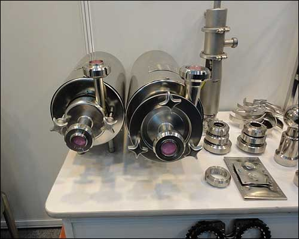
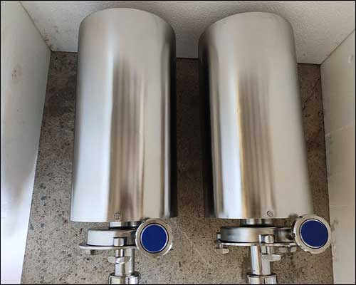

Hygienic flow equipment
SS Centrifugal Pumps
Sanitary stainless-steel centrifugal pumps from 500 LPH to 1,00,000 LPH, with heads up to 60 MWC, for milk, juice, syrups and other liquids. Built by Tavron Engineers in Chennai, India, since 2004.

- Capacity
- 500 LPH to 1,00,000 LPH
- Head
- Up to 60 MWC
- Construction
- SS 304 / SS 316
- Drive
- Coupled to an electric motor, or monobloc; petrol or diesel engine versions available
- Impeller
- Open, for viscous products and pulps
- Vacuum
- Suitable for operation under vacuum
- Seal
- Durable mechanical shaft seal
- Fittings
- SMS / DIN
How it works
What is a centrifugal pump?
A centrifugal pump moves a fluid by transferring rotational energy from a driven rotor, the impeller. Fluid enters the rapidly rotating impeller along its axis and is thrown out along its circumference through the vane tips.
Built for hygienic duty
- Sanitary construction
- Quick to dismantle for cleaning
- Adjustable ball feet

Applications
Where they are used
| Industry | Pumping |
|---|---|
| Dairy | Milk, cream, butter oil, evaporator plants |
| Beverage | Juice, sugar syrup, beer, wine |
| Steel | Water for furnace cooling |
| Chemical | Acids, alkalis, cellulose solution, starch solution, yeast, dye |
| Pharmaceutical | Formulations |

Tell us about your application
Send us your product, the capacity you need and how you run your plant, and we'll recommend a configuration and quote for it.